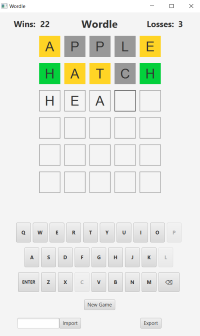
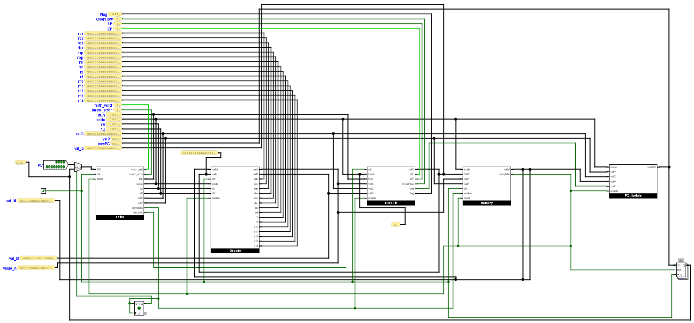
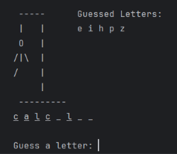

For the final project in my Programming Languages class at Texas A&M University, I was tasked with
developing Wordle using Java and JavaFX. This assignment gave us two weeks to recreate the word guessing game with a functional
UI. The UI was designed using JavaFX to look like the actual game, while the functionality of the UI was programmed in Java. The
UI had to implement the main features of Wordle such as color changing tiles which indicate the accuracy and position of the letter,
a functional UI keyboard, and a visual display for the user statistics. Other requirements of this project were: keeping track of user
data using a file, a way to import and export user and game data, and interaction from the real keyboard. This project allowed me to apply
my knowledge of Java and learn how to use JavaFX to create UIs.
Wordle Website

For the final project in my Computer Organization class, I worked with two classmates to
create a functioning Y86-64 Sequential Processor using Logisim. Over the five weeks we had to complete this project, we developed
all the necessary stages of the processor one by one: Fetch, Decode, Execute, Memory, and PC Update. Our processor successfully implemented
the following instructions: halt, nop, rrmovq, irmovq, rmmovq, mrmovq, OPq, jXX, pushq, and popq. We also had to create files,
initially written in assembly, that we could test our processor with. We created three different tests which all together
used each of the previously mentioned instructions. These tests ranged from finding the maximum of two numbers to adding matrixes.
We then had to demonstrate our functioning implementation to the TA, using the tests we made, to ensure it worked properly.
This project provided hands-on experience in computer architecture and allowed us to test out our assembly skills.
Learn more about Y86 Instruction Set Architecture

For the final project in my Introduction to Engineering class, we had to create three games in Python with a partner. Another student and I collaborated to create Hangman, Old Maid, and Memory. My role was to make Hangman and to design the title screen where the user selects which game to play. Also, I integrated the two card games created by my partner into the main program. One of the requirements of the project was to make the user inputs fool-proof so the program wouldn't crash. This put us into the mind of the user and led to a lot of testing to ensure that all cases were covered. This project helped to improve my Python skills, allowed me to practice teamwork, and gave me experience integrating separate programs into a single application.